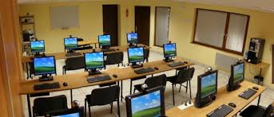
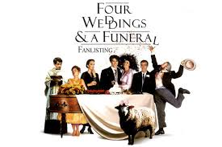

Formation en informatique et bureautique
Formation en informatique
La bibliothèque vous offre la possibilité de vous familiariser avec l'informatique, un puissant outil de travail, de loisir et de communication. En effet, des ateliers sont offerts dans notre bibliothèque. Cette initiation est individuelle.
On y apprend notamment :
- l'utilisation de la souris;
- les icônes;
- les grandes fonctions;
- l'introduction au World Wide Web;
- les outils de navigation sur Internet.
N'hésitez pas à nous consulter pour connaître les services disponibles, car des modalités d'inscription et des frais peuvent s'appliquer.
Formation en bureautique
La bibliothèque possède des postes informatiques réservés à l'utilisation de logiciels de bureautique, tels que les traitements de texte et les tableurs. Il suffit de réserver sur place une période d'utilisation pour y avoir accès.
Vous ne savez pas comment utiliser le traitement de texte? Notre bibliothèque possède une version informatique et conviviale d'un guide pratique de formation.
Activités du mois d'avril
Activités culturelles

11 avril 2015 de 15h à 17h
Projection du film The king's speech de Tom Hooper
Pour un roi, souvent invité à prononcer des discours à la nation, le bégaiement est évidemment un énorme handicap. Le film raconte l'histoire vraie de Georges V, qui a dû, presque à contrecoeur (à cause de son handicap) accepter le trône d'Angleterre.

26 avril 2015 de 15h à 17h
Projection du film Four Weddings and a Funeral de Mike Newell
Four Weddings and a Funeral n'est pas très difficile et vous pouvez le suivre assez facilement. Les thèmes du film le rendent approprié pour étudier le vocabulaire lié à l'amour, au mariage et à la vie quotidienne.
Camp de jour LOISIRS 2000
Reconnus pour le grand nombre d'activités que nous offrons, nous permettons à vos enfants de s'amuser et de s'épanouir dans un environnement sain et sécuritaire. En mettant l'accent sur de bonnes habitudes de vie, nous voulons favoriser leur développement sans jamais oublier notre objectif principal : qu'ils s'amusent. Qualité des locaux, Variété des activités, Sécurité, Qualité du service à la clientèle
Un encadrement supérieur pour la Sécurité de votre enfant
Encadrement
- Dossier personnalisé pour chaque enfant
- équipe de coordination expérimentée
Moniteurs (âgés de 18 ans et plus)
- Formation de 50 heures
- Brevet de secouriste et d'escalade
- Spécialisés dans leur option
Calendrier du camp
Semaine 1 : du 29 juin au 03 juillet 2015
Semaine 2 : du 06 au 10 juillet 2015
Semaine 3 : du 13 au 17 juillet 2015
Semaine 4 : du 20 au 24 juillet 2015
Semaine 5 : du 27 au 31 juillet 2015
Semaine 6 : du 03 au 07 août 2015
Semaine 7 : du 10 au 14 août 2015
Semaine 8 : du 17 au 21 août 2015